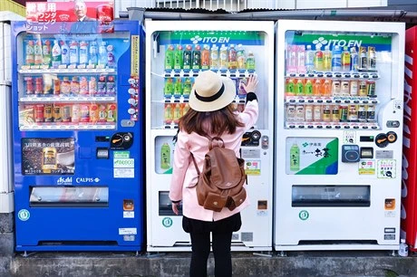

Obřad modrého draka Seiryu
25.08.2025Největší podívanou v okolí chrámu Kiyomizu-dera je Obřad modrého draka, strážce východu a vtělení bohyně Kannon, aneb modrý drak Seiryu...
Ty nejlepší a nejbizarnější postřehy z cesty po Japonsku!
Největší podívanou v okolí chrámu Kiyomizu-dera je Obřad modrého draka, strážce východu a vtělení bohyně Kannon, aneb modrý drak Seiryu...

Při procházení Kjótem jsem nemohla vynechat chrám Kiyomizu-dera. Nejedná se jen o architektonický skvost a významný historický milník, ale je to i posvátné místo nabité příběhy a legendami...

Všichni Japonsko známe pro samuraje, sushi, chrámy, anime... Ale pro jinak nevídanou věc už jen někteří: Automaty na úplně všechno! Hlavně na pití a jídlo. A není to žádná nouzovka z nádraží... Tohle je gurmánský i technologický zážitek v jednom!

Japonsko je opravdu daleko, a byť můžete prakticky vše sehnat a zakoupit přímo v Japonsku, je dobré myslet i na pár věcí, na které jsem zrovna nemyslela a trošku se mi to vymstilo. Zvlášť, když jde o zdraví...